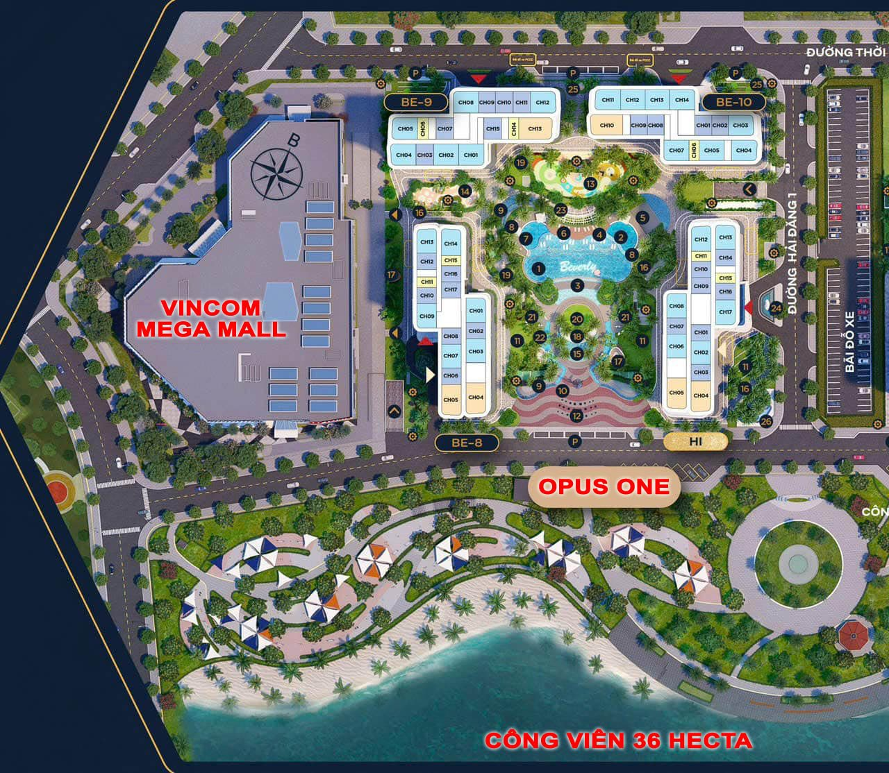
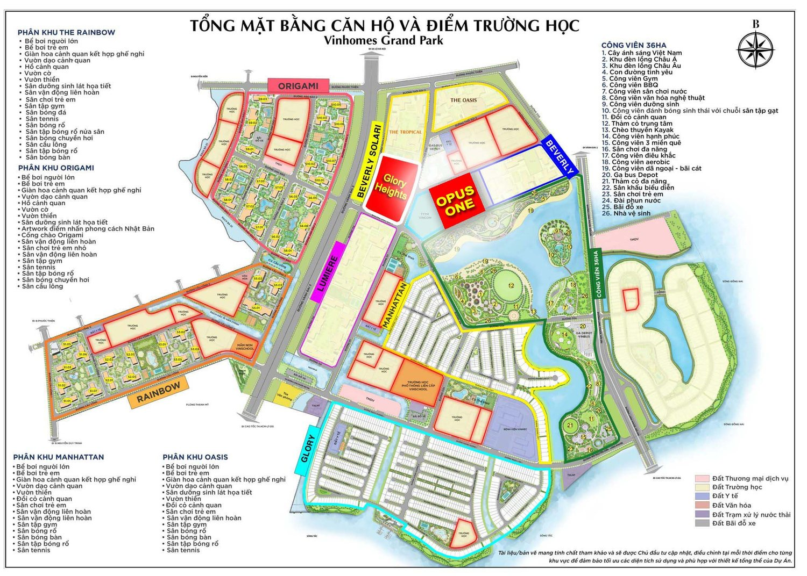
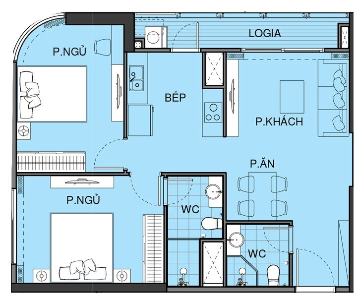
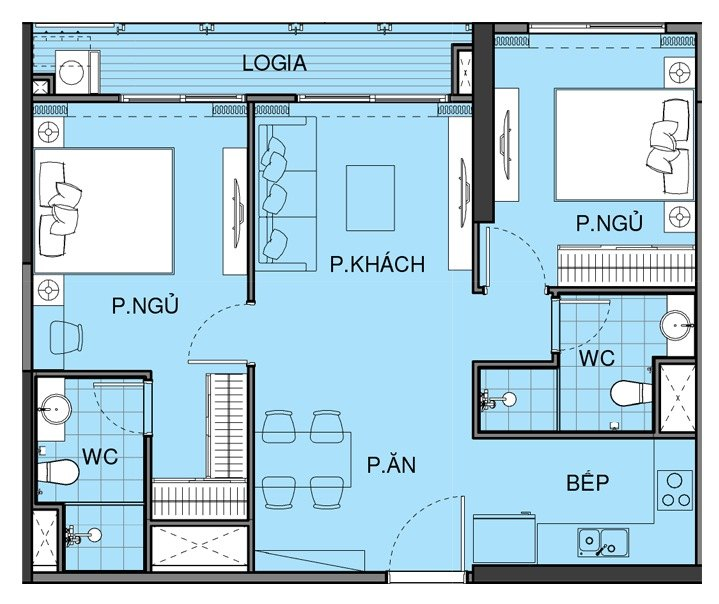
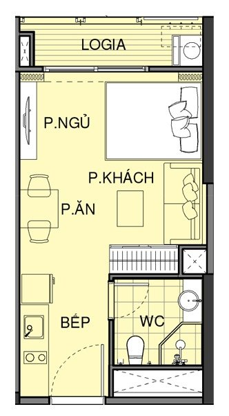
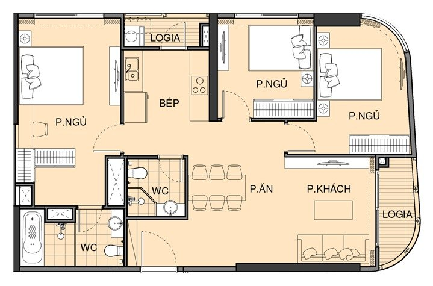
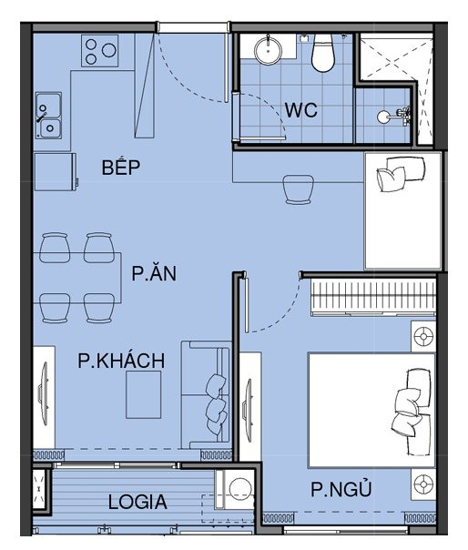
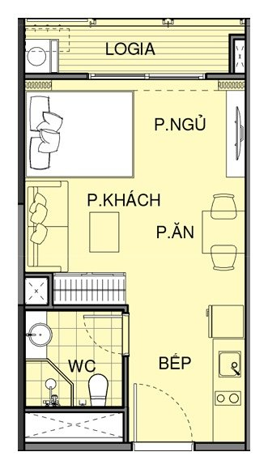

The Opus One (Vinhomes Grand Park, Thủ Đức): thông tin dự án và 15 mặt bằng căn hộ
1. Tóm tắt nhanh
phân khu cuối Grand Park
CH01 đến CH15
tháng 11/2024
The Opus One là phân khu căn hộ cao cấp cuối cùng của đại đô thị Vinhomes Grand Park (TP. Thủ Đức), do Vinhomes phát triển cùng Samty. Dự án ra mắt hai tòa OS1 và OS5 ngày 15/11/2024. Trang giới thiệu công bố 15 mặt bằng, mỗi mẫu có diện tích tim tường và thông thủy.
| Hạng mục | Thông tin |
|---|---|
| Tên dự án | The Opus One (Vinhomes Grand Park) |
| Chủ đầu tư | Vinhomes (cùng Samty) |
| Địa chỉ | Vinhomes Grand Park, TP. Thủ Đức (Quận 9 cũ) |
| Ra mắt | 15/11/2024, tòa OS1 và OS5 |
| Loại căn | Thông thủy / tim tường: studio 28–31 / 33–35 m²; 1PN+1 ~49 / 54 m²; 2PN ~72 / 79–80 m²; 3PN ~92 / 101 m² |
| Phân khúc | High-end theo CBRE (quý II/2026) |
| Giá | Từ 65 triệu/m² khi mở bán; giá về sau 70–82 triệu/m² theo các nguồn |
2. Vị trí
Dự án nằm ở trung tâm Vinhomes Grand Park, đại đô thị ở phía đông TP.HCM; bản đồ trang giới thiệu cho thấy Opus One cạnh Vincom Mega Mall và công viên 36 ha.


3. Sản phẩm
Trang giới thiệu ghi mỗi mẫu căn hai diện tích: “TT” (thông thủy) và “Tim” (tim tường). Phần lớn các mẫu 2 phòng ngủ chỉ chênh nhau dưới 1 m², nên hình chỉ đặt các mặt bằng khác nhau.
| Loại / mã | Số PN | Tim tường (m²) | Thông thủy (m²) | Ghi chú |
|---|---|---|---|---|
| CH01 2PN | 2 | 79,8 | 72,5 | |
| CH02 2PN | 2 | 79,1 | 71,7 | |
| CH03 STUDIO | 0 | 33,1 | 28,4 | |
| CH04 3PN | 3 | 100,6 | 91,9 | |
| CH05 2PN | 2 | 79,5 | 72,6 | Cùng mặt bằng với CH01 2PN |
| CH06 2PN | 2 | 79,3 | 71,9 | Cùng mặt bằng với CH01 2PN |
| CH07 1PN+1 | 1 | 53,9 | 48,7 | |
| CH08 2PN | 2 | 79,8 | 72,6 | Cùng mặt bằng với CH01 2PN |
| CH09 2PN | 2 | 79,1 | 71,9 | Cùng mặt bằng với CH02 2PN |
| CH10 2PN | 2 | 79,1 | 71,8 | Cùng mặt bằng với CH02 2PN |
| CH11 2PN | 2 | 79,7 | 72,5 | Cùng mặt bằng với CH01 2PN |
| CH12 2PN | 2 | 79,7 | 72,5 | Cùng mặt bằng với CH01 2PN |
| CH13 STUDIO | 0 | 34,9 | 30,7 | |
| CH14 1PN+1 | 1 | 54,4 | 48,9 | Cùng mặt bằng với CH07 1PN+1 |
| CH15 1PN+1 | 1 | 53,3 | 48,5 | Cùng mặt bằng với CH07 1PN+1 |
Căn hộ 2 phòng ngủ


Studio

Căn hộ 3 phòng ngủ

Căn hộ 1 phòng ngủ

Studio

4. Tiện ích và thiết kế
Căn hộ mẫu và tiện ích xem trang giới thiệu của dự án.
5. Giá tham khảo (gần đúng)
| Nguồn / loại căn | Mức giá | Ghi chú |
|---|---|---|
| Mở bán 11/2024 | từ 65 triệu/m² | Chủ đầu tư công bố |
| Giai đoạn sau | 70–82 triệu/m² | Một số nguồn; giá rao |
Giá mở bán từ 65 triệu/m²; mặt bằng sau đó 70–82 triệu/m² theo các nguồn tổng hợp.
6. Tiến độ và nguồn cung
- Nguồn cung: CBRE liệt kê đợt “next phase” 400 căn dự kiến mở bán 2026.
- Chưa có thông tin chính thức trong bài: bàn giao, bảng giá hiện hành.
7. Kết luận
The Opus One có nhiều mẫu 2 phòng ngủ gần như giống nhau; khi so sánh nên lưu ý mã căn và hướng.